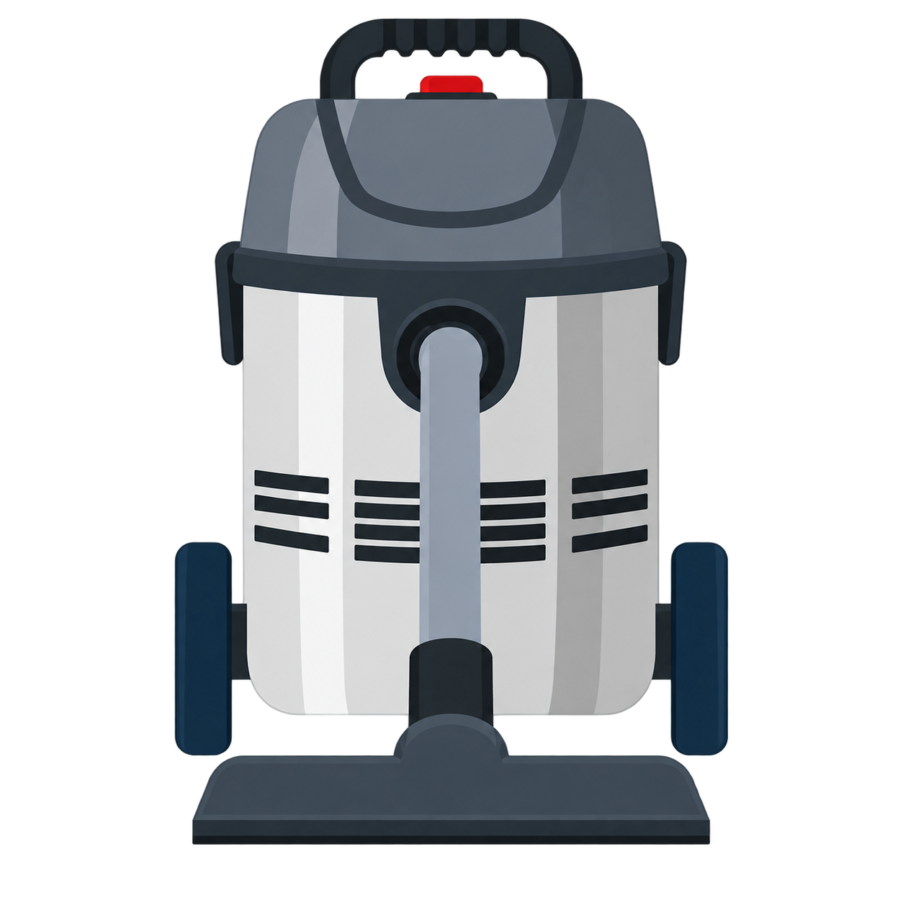
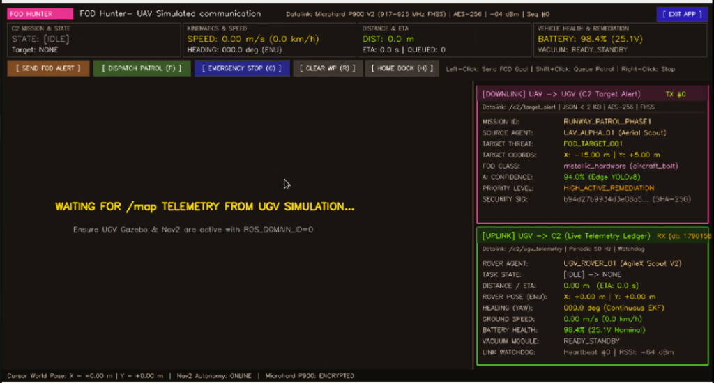

Development of an small-size autonomous wheeled robot for runway inspections
A high-speed collaborative multi-agent robotic system pairing autonomous UAV aerial macro-scouting with precision ground robotic extraction to safeguard active airfields.
Engineered without compromise.
Airfield safety operations require microsecond determinism, military-grade extraction, and rapid autonomous turnaround between aircraft sorties.
Runway Occupancy Time slashed vs traditional manual sweeper trucks, unlocking continuous flight sortie tempo.
Active high-flow centrifugal suction hopper eliminates loose screws, bolt fragments, wire bristles, and tarmac rubber.
Microhard P900 915 MHz FHSS non-line-of-sight bidirectional link ensures fail-safe control across active flightlines.
Full active runway corridor clearance standard with synchronized multi-agent waypoint lane partitioning.
Heterogeneous Multi-Agent Operations.
Decoupling rapid macro-scale corridor surveillance from slow ground physical remediation. The PX4 quadrotor detects and coordinates in seconds; the armored electric ground rover cleans with millimeter precision.

Cybertruck-Inspired All-Terrain Rover
Built on rigid 6061-T6 structural aluminum box-rails with dual high-torque hub motor drive, 180mm sealed undercarriage ground clearance, and active airflow baffles for runway surface aerodynamics.
240Vac Wet & Dry Suction
High-flow centrifugal vortex intake pulls screws, severed safety wire, and pavement aggregate into an onboard dampening filter hopper.

Modular Architecture. Built for Defense.
Four isolated, interlocked subsystems designed and fabricated by the NUS CDE4301 Capstone division in partnership with the Republic of Singapore Air Force.
Chassis, Aerodynamics & Intake Dynamics
Built on a rigid 6061-T6 structural skeleton. Integrated carbon-fiber reinforced PETG vacuum ducting ensures high vortex velocity over uneven taxiway concrete.
48V Isolated Power Architecture
Optically and galvanically isolated power train separating high-draw inductive suction and motor surges from mission compute, STM32 real-time loops, and LiDAR sensors.
Aerial Airframe & Edge Computer Vision
Heavy-lift PX4 quadrotor platform driving a lightweight custom YOLOv8 model compiled to TensorRT. Downward 4K orthomosaic feed with multi-band RTK GNSS geotagging.
ROS 2 Jazzy, Nav2 & C2 Comms
Production navigation stack utilizing Nav2 Smac Planner with dynamic inflation layers. Linked via Microhard P900 FHSS datalink down to an STM32 F446RE real-time motor controller.
Mission Control & Live Telemetry UI.
Software-In-The-Loop simulation conducted in Gazebo Harmonic (Gz-Sim 8) matching real-world airfield friction, kinematic limits, and RF line-of-sight dropouts.

Photogrammetric Digital Twin
High-density 3D aerial photogrammetry scan of NUS Engineering Drive 2 integrated directly into the Nav2 Costmap inflation layer.
Smac Hybrid-A* Pathing
Continuously smooth Dubins curvature navigation paths preventing aggressive turns that could destabilize the intake vacuum seal.
STANAG & RSAF Verification
Supervised under Dr Tang Kok Zuea and Air Engineering officers to meet active flightline safety tolerances before physical trials.
The Future of Autonomous Airfield Defense.
Review the complete Capstone documentation, hardware schematics, and Nav2 simulation repos developed for CDE4301 AY26/27.